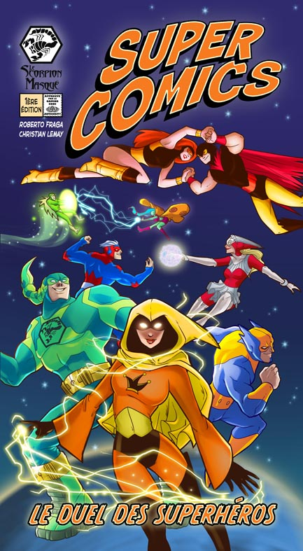

|  | Affrontez votre famille et vos amis dans des duels aussi variés que loufoques : vitesse, adresse, connaissances, ingéniosité, mémoire... Tous vos talents seront mis à l’épreuve. SUPER COMICS vous propose trois modes de jeux. Avec «Héros solitaires», chacun joue à son tour. Pour les grands groupes, formez des équipes de justiciers ou, si vous ne redoutez rien, lancez- vous dans le mode «Apocalypse», où tous les héros jouent EN MÊME TEMPS!! SUPER COMICS possède sans doute le jeu avec les règles les plus simples de la planète! 1. Défiez un adversaire. 2. Retournez une carte duel et jouez! Vous ne savez jamais ce qui vous attend! Quelques exemples? Être le plus rapide à retirer ses bas - ses chaussettes. Fabriquer un avion en papier qui vole le plus loin possible, nommer des supervilains, rédiger l’alphabet à l’envers... |